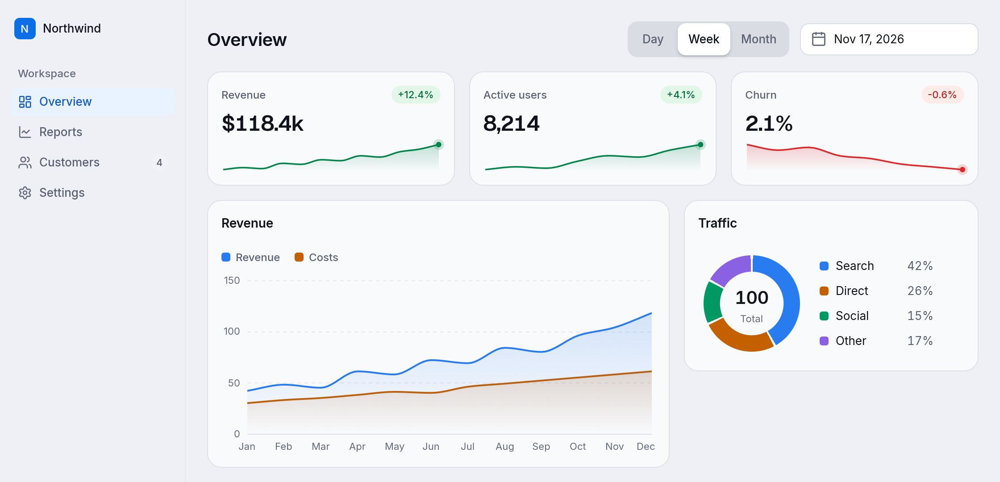
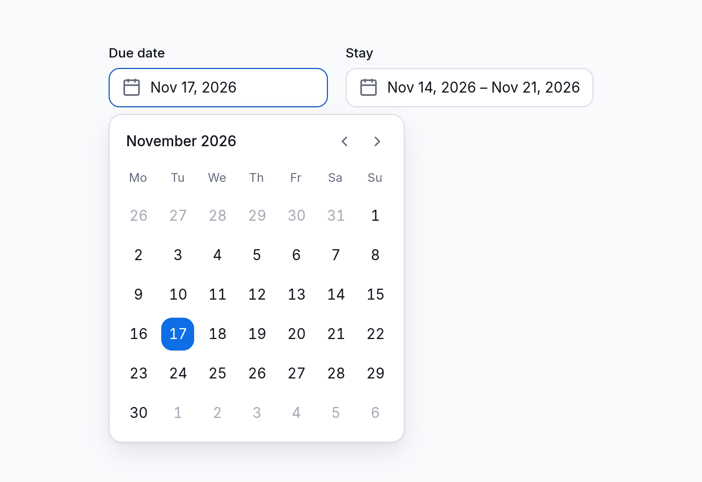
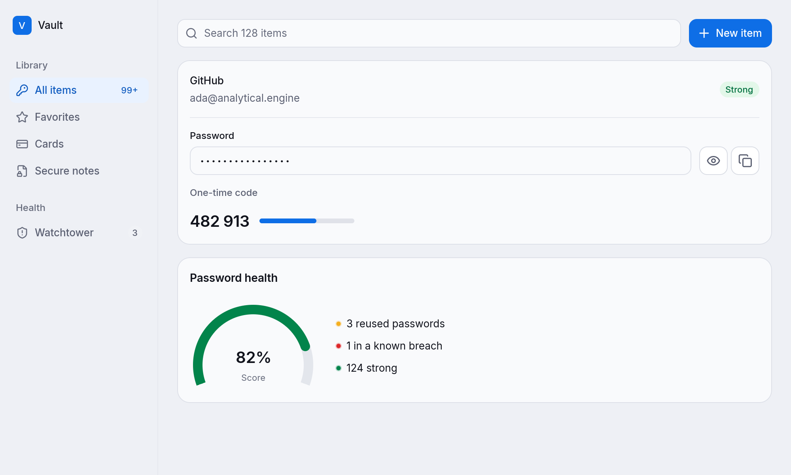
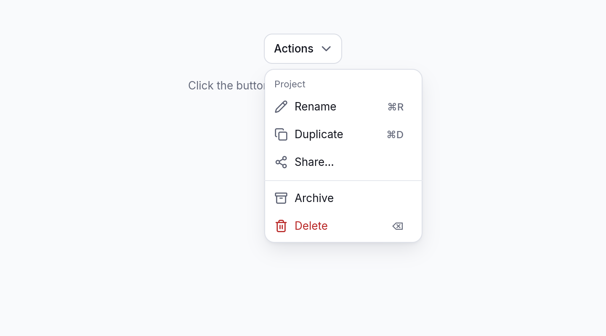

Northwind
Analytics dashboard: KPIs, charts, date ranges.
Every component in lumen is drawn by lumen: the type, the springs, the charts. Here is the journal of what it can do, pasted in as it ships.



Analytics dashboard: KPIs, charts, date ranges.
A password manager, built entirely with lumen.

Every component on one page, every look.